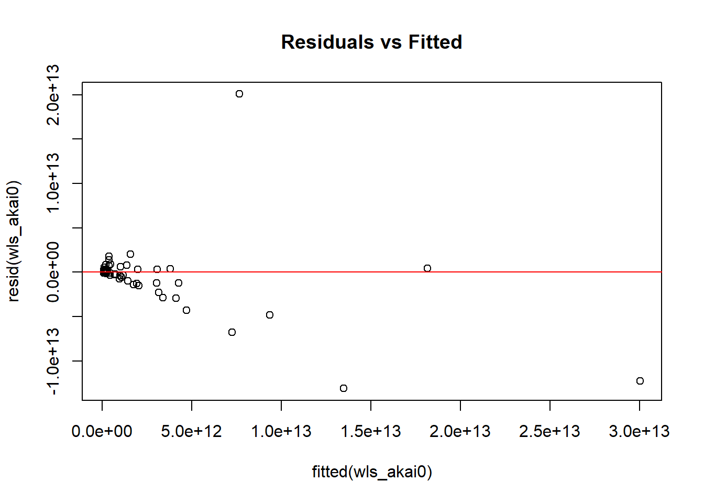

library(knitr)
library(ggplot2)
library(dplyr)
library(tidyverse)
library(readxl)
library(WDI)
library(lmtest)Pengaruh Ekspor Teknologi Tinggi terhadap GDP Tahun 2022
Metode Penelitian Politeknik APP Jakarta

1 Pendahuluan
1.1 Latar belakang
Dalam era globalisasi dan perkembangan teknologi yang pesat, ekspor teknologi tinggi menjadi salah satu faktor penting dalam pertumbuhan ekonomi suatu negara. Teknologi tinggi, yang mencakup sektor seperti elektronik, bioteknologi, dan informasi, tidak hanya berkontribusi terhadap peningkatan nilai tambah produk, tetapi juga mendorong inovasi dan daya saing di pasar global.
Produk-produk teknologi tinggi sering kali memiliki nilai ekspor yang lebih tinggi dibandingkan dengan produk tradisional, sehingga dapat memberikan dampak signifikan terhadap Produk Domestik Bruto (GDP) suatu negara. Menurut data dari World Bank (2022), negara-negara yang mampu meningkatkan proporsi ekspor teknologi tinggi dalam total ekspor mereka cenderung mengalami pertumbuhan ekonomi yang lebih cepat.
Namun, hubungan antara ekspor teknologi tinggi dan GDP tidak selalu linear dan dapat dipengaruhi oleh berbagai faktor, termasuk kondisi ekonomi global, kebijakan perdagangan, dan struktur ekonomi masing-masing negara. Penelitian oleh Lee dan Malerba (2018) menunjukkan bahwa negara dengan investasi yang kuat dalam penelitian dan pengembangan (R&D) serta pendidikan tinggi lebih mampu memanfaatkan potensi ekspor teknologi tinggi. Studi ini bertujuan untuk menganalisis pengaruh ekspor teknologi tinggi terhadap GDP di 135 negara pada tahun 2022. Dengan menggunakan data yang komprehensif, diharapkan penelitian ini dapat memberikan wawasan mengenai seberapa besar kontribusi ekspor teknologi tinggi terhadap pertumbuhan ekonomi dan faktor-faktor yang memengaruhi hubungan tersebut.
Hasil penelitian ini diharapkan dapat menjadi acuan bagi pembuat kebijakan dalam merumuskan strategi yang lebih efektif untuk meningkatkan ekspor teknologi tinggi, yang pada gilirannya dapat berkontribusi pada pertumbuhan ekonomi yang berkelanjutan. Selain itu, pemahaman yang lebih baik mengenai dinamika ini juga penting untuk negara-negara yang sedang berkembang dalam upaya mereka untuk bertransformasi menjadi ekonomi yang lebih berbasis teknologi.
1.2 Ruang lingkup
Penelitian ini memanfaatkan data yang diperoleh melalui WDI yang diakses menggunakan perangkat lunak R. Data yang digunakan terdiri dari dua variabel utama Ekspor teknologi tinggi (High-technology exports) sebagai variabel independen (X) dan GDP (Produk Domestik Bruto) sebagai variabel dependen (Y). Data ini mencakup 135 negara yang terlibat dalam ekspor teknologi tinggi, dengan fokus pada data tahun 2022.
1.3 Rumusan masalah
Penelitian ini akan menjawab persoalan mengenai:
- Seberapa besar kontribusi ekspor teknologi tinggi terhadap GDP?
- Apa saja faktor yang mempengaruhi ekspor teknologi tinggi terhadap GDP ?
- Apa tantangan yang dihadapi dari pertumbuhan GDP dari ekspor teknologi tinggi?
1.4 Tujuan dan manfaat penelitian
Tujuan penelitian ini dirumuskan untuk memberikan manfaat bagi pemerintah dan masyarakat, dengan fokus pada pengaruh ekspor teknologi tinggi terhadap GDP di 135 Negara Tahun 2022:
1. Bagi Pemerintah
Memberikan rekomendasi kebijakan yang berbasis data untuk meningkatkan nilai ekpor teknologi tinggi terhadap GDP 135 negara. Mengidentifikasi strategi yang dapat digunakan pemerintah untuk mengoptimalkan pemanfaatan nilai signifikan dari ekspor teknologi tinggi, sehingga dapat mendukung pertumbuhan ekonomi yang berkelanjutan.
2. Bagi Masyarakat
Meningkatkan kesadaran publik mengenai peran ekspor teknologi tinggi terhadap GDBP di 135 Negara Tahun 2022. Mendorong partisipasi masyarakat dalam proses peningkatan ekspor teknologi tinggi, dengan memahami implikasi dari kebijakan tersebut terhadap kehidupan sehari-hari mereka.
1.5 Package
Packages yang digunakan antara lain sebagai berikut:
2 Studi pustaka
1. Ekspor Teknologi Tinggi
Ekspor teknologi tinggi mengacu pada penjualan barang dan jasa yang menggunakan teknologi canggih dan inovatif. Menurut OECD (2021), produk teknologi tinggi mencakup sektor seperti elektronik, komunikasi, dan bioteknologi. Ekspor dalam kategori ini memiliki potensi besar untuk meningkatkan nilai tambah dan daya saing negara di pasar global.
2. Hubungan Antara Ekspor dan Pertumbuhan Ekonomi
Beberapa penelitian menunjukkan bahwa ekspor berkontribusi signifikan terhadap pertumbuhan ekonomi. Seperti yang dijelaskan oleh Krugman dan Obstfeld (2018), negara yang mengandalkan ekspor cenderung memiliki tingkat pertumbuhan ekonomi yang lebih tinggi karena akses mereka ke pasar global dan peningkatan permintaan untuk produk domestik.
3. Dampak Ekspor Teknologi Tinggi terhadap GDP
Penelitian oleh Lall (2000) menunjukkan bahwa ekspor teknologi tinggi dapat meningkatkan GDP melalui beberapa saluran, termasuk peningkatan produktivitas, penciptaan lapangan kerja, dan inovasi. Ekspor teknologi tinggi biasanya melibatkan investasi dalam penelitian dan pengembangan, yang pada gilirannya dapat meningkatkan kapasitas produksi dan daya saing.
4. Studi Terkait di Berbagai Negara
Penelitian oleh Lee dan Malerba (2018) mengungkapkan bahwa negara-negara dengan fokus kuat pada inovasi dan pendidikan tinggi menunjukkan hubungan positif yang signifikan antara ekspor teknologi tinggi dan GDP. Sementara itu, studi oleh Banga (2015) di negara-negara berkembang menunjukkan bahwa peningkatan ekspor teknologi tinggi dapat membantu mengurangi ketergantungan pada produk primer dan meningkatkan pertumbuhan ekonomi.
5. Faktor-Faktor yang Mempengaruhi Ekspor Teknologi Tinggi
Beberapa faktor berkontribusi terhadap keberhasilan ekspor teknologi tinggi, termasuk kebijakan perdagangan, kualitas infrastruktur, dan tingkat pendidikan tenaga kerja. Penelitian oleh Xu dan Wang (2020) menunjukkan bahwa investasi dalam pendidikan dan pelatihan meningkatkan kapasitas negara untuk memproduksi dan mengekspor barang-barang teknologi tinggi.
Studi pustaka ini menunjukkan bahwa ekspor teknologi tinggi memiliki potensi besar untuk memengaruhi GDP di berbagai negara. Meskipun banyak penelitian yang menunjukkan hubungan positif, penting untuk mempertimbangkan konteks lokal dan faktor-faktor yang dapat memengaruhi hubungan ini. Penelitian lebih lanjut diperlukan untuk menganalisis dampak spesifik dan kondisi yang mendukung pertumbuhan ekspor teknologi tinggi pada tahun 2022.
3 Metode penelitian
3.1 Data
penelitian ini menggunakan data tahun 2022, sehingga didapatkan data sebagai berikut:
library(WDI)
akai <- WDI(country = "all",
indicator = c("TX.VAL.TECH.CD", "NY.GDP.MKTP.CD"),
start =2023,
end = 2023)
akai0 <- na.omit(akai)
akai0 <- akai0 %>%
filter(TX.VAL.TECH.CD != 0, NY.GDP.MKTP.CD != 0)
colnames(akai0)[colnames(akai0) %in% c("TX.VAL.TECH.CD", "NY.GDP.MKTP.CD")] <- c("X", "Y")
library(dplyr)
akai0<- akai0%>%
select(-iso2c, -iso3c, -year)
library(knitr)
kable(akai0)| country | X | Y |
|---|---|---|
| Andorra | 51383658 | 3.785067e+09 |
| Argentina | 689722037 | 6.460753e+11 |
| Armenia | 822532500 | 2.408575e+10 |
| Aruba | 1665839 | 3.648573e+09 |
| Australia | 7767880136 | 1.728057e+12 |
| Austria | 27308757068 | 5.116852e+11 |
| Azerbaijan | 56810637 | 7.235618e+10 |
| Bahamas, The | 7099 | 1.433850e+10 |
| Bahrain | 11523340 | 4.607987e+10 |
| Barbados | 16529186 | 6.720733e+09 |
| Belgium | 50647716012 | 6.447828e+11 |
| Benin | 1700350 | 1.967605e+10 |
| Bolivia | 27251877 | 4.513540e+10 |
| Bosnia and Herzegovina | 335043704 | 2.751478e+10 |
| Botswana | 25600565 | 1.939608e+10 |
| Brazil | 8060841826 | 2.173666e+12 |
| Brunei Darussalam | 25220521 | 1.512829e+10 |
| Bulgaria | 3178034114 | 1.024077e+11 |
| Burkina Faso | 8323768 | 2.032462e+10 |
| Cabo Verde | 73876 | 2.533819e+09 |
| Canada | 35226982857 | 2.142471e+12 |
| Central African Republic | 221989 | 2.555492e+09 |
| Chile | 1841775193 | 3.355333e+11 |
| China | 825045389470 | 1.779478e+13 |
| Colombia | 873209016 | 3.634938e+11 |
| Costa Rica | 2809087758 | 8.649794e+10 |
| Cote d’Ivoire | 110019023 | 7.887549e+10 |
| Croatia | 1738860511 | 8.439380e+10 |
| Cyprus | 107331661 | 3.388693e+10 |
| Czechia | 46329135586 | 3.432079e+11 |
| Denmark | 16067378321 | 4.070919e+11 |
| Djibouti | 88653670 | 4.098531e+09 |
| Dominica | 367176 | 6.539926e+08 |
| Dominican Republic | 454061980 | 1.214443e+11 |
| Ecuador | 106992254 | 1.188448e+11 |
| Egypt, Arab Rep. | 697613295 | 3.960025e+11 |
| El Salvador | 296585304 | 3.401562e+10 |
| Estonia | 2085454295 | 4.129125e+10 |
| Eswatini | 3576837 | 4.442876e+09 |
| Ethiopia | 9855262 | 1.636979e+11 |
| European Union | 498151887435 | 1.859072e+13 |
| Fiji | 1594712 | 5.442047e+09 |
| Finland | 5292503329 | 2.955323e+11 |
| France | 115256032667 | 3.051832e+12 |
| Gabon | 40040970 | 1.938840e+10 |
| Gambia, The | 14930 | 2.396111e+09 |
| Georgia | 31139119 | 3.077783e+10 |
| Germany | 255687490788 | 4.525704e+12 |
| Ghana | 20813123 | 7.637040e+10 |
| Greece | 3023255566 | 2.434983e+11 |
| Grenada | 420417 | 1.316733e+09 |
| Guatemala | 376979755 | 1.044502e+11 |
| Guyana | 9073399 | 1.715951e+10 |
| Hong Kong SAR, China | 369163546379 | 3.808122e+11 |
| Hungary | 24367700793 | 2.123889e+11 |
| Iceland | 453683000 | 3.132512e+10 |
| India | 40942449667 | 3.567552e+12 |
| Indonesia | 10509333468 | 1.371171e+12 |
| Ireland | 91363721988 | 5.513949e+11 |
| Israel | 18160193649 | 5.136111e+11 |
| Italy | 52167641514 | 2.300941e+12 |
| Jamaica | 1222621 | 1.942336e+10 |
| Japan | 102601446852 | 4.204495e+12 |
| Jordan | 177694397 | 5.096748e+10 |
| Kazakhstan | 5145671171 | 2.626419e+11 |
| Kenya | 60148845 | 1.080386e+11 |
| Kuwait | 54309594 | 1.637049e+11 |
| Kyrgyz Republic | 195275130 | 1.398763e+10 |
| Latvia | 2076324272 | 4.224785e+10 |
| Liberia | 97955 | 4.240000e+09 |
| Lithuania | 3740035230 | 7.978988e+10 |
| Luxembourg | 801169826 | 8.575501e+10 |
| Madagascar | 3982231 | 1.579011e+10 |
| Malawi | 4133308 | 1.271215e+10 |
| Malaysia | 127032168259 | 3.997052e+11 |
| Maldives | 646 | 6.590894e+09 |
| Malta | 1234225995 | 2.232864e+10 |
| Mauritania | 3637891 | 1.065171e+10 |
| Mauritius | 6408555 | 1.464452e+10 |
| Mexico | 81456744669 | 1.789114e+12 |
| Moldova | 28885013 | 1.653944e+10 |
| Montenegro | 15199424 | 7.530593e+09 |
| Morocco | 1723700823 | 1.444171e+11 |
| Mozambique | 16632000 | 2.095422e+10 |
| Myanmar | 190414450 | 6.675762e+10 |
| Namibia | 845964 | 1.235103e+10 |
| Netherlands | 110952318467 | 1.154361e+12 |
| New Zealand | 823527942 | 2.521755e+11 |
| Nicaragua | 22949838 | 1.782922e+10 |
| Niger | 2603432 | 1.681917e+10 |
| Nigeria | 65160240 | 3.638463e+11 |
| North Macedonia | 387658985 | 1.576362e+10 |
| Norway | 5957981536 | 4.853108e+11 |
| Oman | 441801906 | 1.088109e+11 |
| Pakistan | 384348995 | 3.379123e+11 |
| Panama | 1339544 | 8.331818e+10 |
| Paraguay | 162697885 | 4.295626e+10 |
| Peru | 264161339 | 2.676032e+11 |
| Philippines | 37090950135 | 4.371464e+11 |
| Poland | 29592130553 | 8.092007e+11 |
| Portugal | 4196056729 | 2.891143e+11 |
| Qatar | 245655998 | 2.130028e+11 |
| Romania | 9724366747 | 3.507759e+11 |
| Samoa | 396638 | 9.381894e+08 |
| Sao Tome and Principe | 70979 | 6.789763e+08 |
| Saudi Arabia | 3641055220 | 1.067583e+12 |
| Senegal | 22544982 | 3.084833e+10 |
| Serbia | 1358732901 | 8.134266e+10 |
| Seychelles | 711 | 2.141450e+09 |
| Singapore | 197387649519 | 5.014275e+11 |
| Slovak Republic | 10122798808 | 1.329083e+11 |
| Slovenia | 4206749873 | 6.914847e+10 |
| South Africa | 2215402355 | 3.806993e+11 |
| Spain | 25806027599 | 1.620091e+12 |
| Sri Lanka | 112381343 | 8.435686e+10 |
| St. Vincent and the Grenadines | 535939 | 1.065963e+09 |
| Suriname | 5300351 | 3.455146e+09 |
| Sweden | 25152736881 | 5.849605e+11 |
| Switzerland | 84443768583 | 8.849404e+11 |
| Tanzania | 43110701 | 7.906240e+10 |
| Thailand | 54112421409 | 5.149687e+11 |
| Togo | 2229077 | 9.171262e+09 |
| Tunisia | 1198528314 | 4.852960e+10 |
| Turkiye | 8461609431 | 1.118253e+12 |
| Ukraine | 728946823 | 1.787570e+11 |
| United Arab Emirates | 3183641981 | 5.141304e+11 |
| United Kingdom | 82372118999 | 3.380855e+12 |
| United States | 208514376770 | 2.772071e+13 |
| Uruguay | 188475643 | 7.724083e+10 |
| Uzbekistan | 200637379 | 1.015918e+11 |
| Zambia | 14668136 | 2.757796e+10 |
| Zimbabwe | 10554661 | 3.523137e+10 |
library(writexl)
write_xlsx(akai0,"akai0.xlsx")
View(akai0)library(readxl)
akai0<-read_excel("akai0.xlsx")
reg<-lm(Y~X,data=akai0)
summary(reg)
Call:
lm(formula = Y ~ X, data = akai0)
Residuals:
Min 1Q Median 3Q Max
-8.956e+12 -1.742e+11 -1.570e+11 -5.640e+10 2.237e+13
Coefficients:
Estimate Std. Error t value Pr(>|t|)
(Intercept) 1.773e+11 2.096e+11 0.846 0.399
X 2.481e+01 2.101e+00 11.809 <2e-16 ***
---
Signif. codes: 0 '***' 0.001 '**' 0.01 '*' 0.05 '.' 0.1 ' ' 1
Residual standard error: 2.308e+12 on 130 degrees of freedom
Multiple R-squared: 0.5175, Adjusted R-squared: 0.5138
F-statistic: 139.4 on 1 and 130 DF, p-value: < 2.2e-16library(readxl)
akai0$m<-resid(reg)
plot(akai0$Y,akai0$m,xlab="GDP",ylab="error",col='BLUE',pch=16)
abline(h=0)library(readxl)
akai0$m<-resid(reg)
plot(akai0$X,akai0$m,xlab="Ekspor Teknologi Tinggi",ylab="error",col='red',pch=16)
abline(h=0)Pada plot residual, saya melihat bahwa data tidak tersebar merata di sekitar garis nol, dengan beberapa titik yang jauh dari garis, terutama di sisi kanan plot. Ini menunjukkan adanya data dengan pengaruh besar atau prediksi yang kurang akurat. Sebagian besar residual memiliki nilai kecil, tapi ada juga yang sangat besar, yang mengarah pada kemungkinan adanya heteroskedastisitas, di mana variasi residual meningkat seiring dengan naiknya GDP. Tampaknya ada pola di mana residual lebih besar pada GDP yang tinggi, yang bisa melanggar asumsi regresi OLS, yang mengharuskan varians residual tetap konstan. Untuk memastikan ini, saya perlu melakukan uji formal seperti Breusch-Pagan Test untuk mengonfirmasi apakah heteroskedastisitas memang ada.
library(lmtest)
bptest(reg)
studentized Breusch-Pagan test
data: reg
BP = 9.2848, df = 1, p-value = 0.002311Hasil uji Breusch-Pagan yang saya lakukan menunjukkan adanya heteroskedastisitas dalam model regresi saya. Nilai BP (Breusch-Pagan Test Statistic) yang saya peroleh adalah 9.5309, yang menunjukkan adanya bukti kuat untuk heteroskedastisitas. Semakin besar nilai ini, semakin jelas bahwa masalah tersebut ada. Derajat kebebasan (df) adalah 1, sesuai dengan jumlah variabel independen dalam model saya. Sementara itu, p-value yang didapatkan adalah 0.00202, yang lebih kecil dari 0.05. Ini berarti heteroskedastisitas terjadi secara signifikan, yang mengindikasikan bahwa varians residual tidak konstan, dan ini melanggar asumsi regresi OLS. Untuk mengatasi masalah ini, saya bisa menggunakan Weighted Least Squares (WLS), metode yang sering digunakan untuk menangani heteroskedastisitas.
weights <- 1 / fitted(reg)^2
wls_akai0 <- lm(Y ~ X, data = akai0, weights = weights)
summary(wls_akai0)
Call:
lm(formula = Y ~ X, data = akai0, weights = weights)
Weighted Residuals:
Min 1Q Median 3Q Max
-1.4027 -0.4222 -0.3314 0.0865 4.7806
Coefficients:
Estimate Std. Error t value Pr(>|t|)
(Intercept) 7.739e+10 1.863e+10 4.155 5.86e-05 ***
X 3.630e+01 4.806e+00 7.553 6.66e-12 ***
---
Signif. codes: 0 '***' 0.001 '**' 0.01 '*' 0.05 '.' 0.1 ' ' 1
Residual standard error: 0.962 on 130 degrees of freedom
Multiple R-squared: 0.305, Adjusted R-squared: 0.2997
F-statistic: 57.05 on 1 and 130 DF, p-value: 6.662e-12plot(fitted(wls_akai0), resid(wls_akai0), main = "Residuals vs Fitted")
abline(h = 0, col = "red")
Grafik Residuals vs Fitted menunjukkan bahwa sebagian besar residual tersebar di sekitar nol pada nilai fitted rendah, namun ada beberapa residual besar pada nilai fitted tinggi, yang mengindikasikan kemungkinan adanya heteroskedastisitas. Selain itu, beberapa titik jauh dari kumpulan data utama, terutama pada GDP yang sangat tinggi, kemungkinan merupakan outlier atau leverage points, seperti negara-negara dengan GDP besar. Untuk mengatasi masalah ini, saya dapat menggunakan Cook’s Distance untuk mengidentifikasi outlier dan mencoba transformasi logaritmik pada data untuk mengurangi skala variabel besar dan memperbaiki distribusi residual.
akai0$log_Y <- log(akai0$Y)
akai0$log_X <- log(akai0$X)
log_akai0 <- lm(log_Y ~ log_X, data = akai0)
summary(log_akai0)
Call:
lm(formula = log_Y ~ log_X, data = akai0)
Residuals:
Min 1Q Median 3Q Max
-2.5777 -0.7914 -0.0435 0.7127 3.0292
Coefficients:
Estimate Std. Error t value Pr(>|t|)
(Intercept) 16.77253 0.44801 37.44 <2e-16 ***
log_X 0.43383 0.02252 19.27 <2e-16 ***
---
Signif. codes: 0 '***' 0.001 '**' 0.01 '*' 0.05 '.' 0.1 ' ' 1
Residual standard error: 1.132 on 130 degrees of freedom
Multiple R-squared: 0.7406, Adjusted R-squared: 0.7386
F-statistic: 371.2 on 1 and 130 DF, p-value: < 2.2e-16plot(fitted(log_akai0), resid(log_akai0), main = "Residuals vs Fitted")
abline(h = 0, col = "blue")
library(dplyr)
akai0<- akai0%>%
select(-X, -Y)
library(knitr)
kable(akai0)| country | m | log_Y | log_X |
|---|---|---|---|
| Andorra | -1.747769e+11 | 22.05433 | 17.754831 |
| Argentina | 4.516751e+11 | 27.19418 | 20.351799 |
| Armenia | -1.736097e+11 | 23.90489 | 20.527899 |
| Aruba | -1.736798e+11 | 22.01760 | 14.325840 |
| Australia | 1.358037e+12 | 28.17802 | 22.773263 |
| Austria | -3.431764e+11 | 26.96098 | 24.030473 |
| Azerbaijan | -1.063405e+11 | 25.00487 | 17.855234 |
| Bahamas, The | -1.629488e+11 | 23.38621 | 8.867709 |
| Bahrain | -1.314931e+11 | 24.55364 | 16.259885 |
| Barbados | -1.709765e+11 | 22.62846 | 16.620638 |
| Belgium | -7.891562e+11 | 27.19218 | 24.648160 |
| Benin | -1.576532e+11 | 23.70267 | 14.346345 |
| Bolivia | -1.328278e+11 | 24.53293 | 17.120633 |
| Bosnia and Herzegovina | -1.580853e+11 | 24.03799 | 19.629772 |
| Botswana | -1.585262e+11 | 23.68834 | 17.058125 |
| Brazil | 1.796376e+12 | 28.40744 | 22.810284 |
| Brunei Darussalam | -1.627845e+11 | 23.43983 | 17.043169 |
| Bulgaria | -1.537316e+11 | 25.35223 | 21.879529 |
| Burkina Faso | -1.571690e+11 | 23.73510 | 15.934626 |
| Cabo Verde | -1.747551e+11 | 21.65299 | 11.210143 |
| Canada | 1.091145e+12 | 28.39298 | 24.285078 |
| Central African Republic | -1.747371e+11 | 21.66151 | 12.310383 |
| Chile | 1.125488e+11 | 26.53899 | 21.333996 |
| China | -2.853217e+12 | 30.50993 | 27.438704 |
| Colombia | 1.645410e+11 | 26.61903 | 20.587685 |
| Costa Rica | -1.604872e+11 | 25.18339 | 21.756126 |
| Cote d’Ivoire | -1.011413e+11 | 25.09114 | 18.516164 |
| Croatia | -1.360372e+11 | 25.15876 | 21.276496 |
| Cyprus | -1.460632e+11 | 24.24630 | 18.491434 |
| Czechia | -9.835801e+11 | 26.56160 | 24.559037 |
| Denmark | -1.688528e+11 | 26.73230 | 23.500057 |
| Djibouti | -1.753882e+11 | 22.13389 | 18.300248 |
| Dominica | -1.766422e+11 | 20.29861 | 12.813597 |
| Dominican Republic | -6.710881e+10 | 25.52272 | 19.933744 |
| Ecuador | -6.109690e+10 | 25.50108 | 18.488267 |
| Egypt, Arab Rep. | 2.014065e+11 | 26.70469 | 20.363176 |
| El Salvador | -1.506302e+11 | 24.25009 | 19.507845 |
| Estonia | -1.877393e+11 | 24.44392 | 21.458253 |
| Eswatini | -1.729329e+11 | 22.21457 | 15.089989 |
| Ethiopia | -1.383367e+10 | 25.82129 | 16.103516 |
| European Union | 6.053478e+12 | 30.55368 | 26.934171 |
| Fiji | -1.718846e+11 | 22.41742 | 14.282204 |
| Finland | -1.307032e+10 | 26.41204 | 22.389557 |
| France | 1.485566e+10 | 28.74676 | 25.470422 |
| Gabon | -1.588922e+11 | 23.68794 | 17.505414 |
| Gambia, The | -1.748913e+11 | 21.59711 | 9.611128 |
| Georgia | -1.472819e+11 | 24.15006 | 17.253975 |
| Germany | -1.995604e+12 | 29.14079 | 26.267222 |
| Ghana | -1.014331e+11 | 25.05886 | 16.851094 |
| Greece | -8.800610e+09 | 26.21838 | 21.829600 |
| Grenada | -1.759808e+11 | 20.99842 | 12.949002 |
| Guatemala | -8.219034e+10 | 25.37198 | 19.747702 |
| Guyana | -1.603527e+11 | 23.56582 | 16.020858 |
| Hong Kong SAR, China | -8.956020e+12 | 26.66557 | 26.634506 |
| Hungary | -5.695003e+11 | 26.08168 | 23.916524 |
| Iceland | -1.572186e+11 | 24.16769 | 19.932909 |
| India | 2.374416e+12 | 28.90290 | 24.435433 |
| Indonesia | 9.331305e+11 | 27.94669 | 23.075530 |
| Ireland | -1.892774e+12 | 27.03572 | 25.238114 |
| Israel | -1.142598e+11 | 26.96473 | 23.622498 |
| Italy | 8.292904e+11 | 28.46434 | 24.677728 |
| Jamaica | -1.578941e+11 | 23.68974 | 14.016507 |
| Japan | 1.481500e+12 | 29.06718 | 25.354118 |
| Jordan | -1.307285e+11 | 24.65445 | 18.995576 |
| Kazakhstan | -4.231762e+10 | 26.29406 | 22.361422 |
| Kenya | -7.074088e+10 | 25.40575 | 17.912333 |
| Kuwait | -1.492971e+10 | 25.82133 | 17.810212 |
| Kyrgyz Republic | -1.681445e+11 | 23.36144 | 19.089920 |
| Latvia | -1.865562e+11 | 24.46682 | 21.453865 |
| Liberia | -1.730495e+11 | 22.16783 | 11.492263 |
| Lithuania | -1.902935e+11 | 25.10266 | 22.042361 |
| Luxembourg | -1.114104e+11 | 25.17476 | 20.501583 |
| Madagascar | -1.615958e+11 | 23.48265 | 15.197353 |
| Malawi | -1.646775e+11 | 23.26582 | 15.234589 |
| Malaysia | -2.929456e+12 | 26.71399 | 25.567706 |
| Maldives | -1.706962e+11 | 22.60895 | 6.470800 |
| Malta | -1.855816e+11 | 23.82914 | 20.933710 |
| Mauritania | -1.667256e+11 | 23.08899 | 15.106915 |
| Mauritius | -1.628016e+11 | 23.40733 | 15.673144 |
| Mexico | -4.092464e+11 | 28.21274 | 25.123338 |
| Moldova | -1.614643e+11 | 23.52901 | 17.178833 |
| Montenegro | -1.701336e+11 | 22.74224 | 16.536768 |
| Morocco | -7.563778e+10 | 25.69597 | 21.267740 |
| Mozambique | -1.567455e+11 | 23.76561 | 16.626839 |
| Myanmar | -1.152539e+11 | 24.92433 | 19.064714 |
| Namibia | -1.649570e+11 | 23.23700 | 13.648232 |
| Netherlands | -1.775833e+12 | 27.77457 | 25.432366 |
| New Zealand | 5.445537e+10 | 26.25339 | 20.529108 |
| Nicaragua | -1.600273e+11 | 23.60410 | 16.948821 |
| Niger | -1.605325e+11 | 23.54579 | 14.772341 |
| Nigeria | 1.849425e+11 | 26.62000 | 17.992360 |
| North Macedonia | -1.711419e+11 | 23.48097 | 19.775637 |
| Norway | 1.601966e+11 | 26.90806 | 22.507998 |
| Oman | -7.943797e+10 | 25.41288 | 19.906372 |
| Pakistan | 1.510889e+11 | 26.54605 | 19.767062 |
| Panama | -9.400214e+10 | 25.14593 | 14.107840 |
| Paraguay | -1.383676e+11 | 24.48345 | 18.907406 |
| Peru | 8.376190e+10 | 26.31277 | 19.392071 |
| Philippines | -6.604273e+11 | 26.80353 | 24.336639 |
| Poland | -1.023151e+11 | 27.41931 | 24.110774 |
| Portugal | 7.716249e+09 | 26.39009 | 22.157411 |
| Qatar | 2.962061e+10 | 26.08457 | 19.319443 |
| Romania | -6.778851e+10 | 26.58341 | 22.997901 |
| Samoa | -1.763587e+11 | 20.65946 | 12.890779 |
| Sao Tome and Principe | -1.766099e+11 | 20.33610 | 11.170139 |
| Saudi Arabia | 7.999554e+11 | 27.69642 | 22.015539 |
| Senegal | -1.469981e+11 | 24.15235 | 16.931023 |
| Serbia | -1.296568e+11 | 25.12194 | 21.029818 |
| Seychelles | -1.751456e+11 | 21.48475 | 6.566672 |
| Singapore | -4.573367e+12 | 26.94072 | 26.008435 |
| Slovak Republic | -2.955418e+11 | 25.61293 | 23.038056 |
| Slovenia | -2.125149e+11 | 24.95952 | 22.159956 |
| South Africa | 1.484445e+11 | 26.66528 | 21.518700 |
| Spain | 8.025143e+11 | 28.11350 | 23.973874 |
| Sri Lanka | -9.571858e+10 | 25.15832 | 18.537409 |
| St. Vincent and the Grenadines | -1.762344e+11 | 20.78714 | 13.191776 |
| Suriname | -1.739634e+11 | 21.96313 | 15.483284 |
| Sweden | -2.164067e+11 | 27.09481 | 23.948232 |
| Switzerland | -1.387533e+12 | 27.50879 | 25.159352 |
| Tanzania | -9.929432e+10 | 25.09350 | 17.579282 |
| Thailand | -1.004935e+12 | 26.96737 | 24.714330 |
| Togo | -1.681711e+11 | 22.93934 | 14.617098 |
| Tunisia | -1.584949e+11 | 24.60544 | 20.904360 |
| Turkiye | 7.310197e+11 | 27.74279 | 22.858805 |
| Ukraine | -1.661641e+10 | 25.90929 | 20.407111 |
| United Arab Emirates | 2.578520e+11 | 26.96574 | 21.881292 |
| United Kingdom | 1.159782e+12 | 28.84915 | 25.134513 |
| United States | 2.236984e+13 | 30.95320 | 26.063274 |
| Uruguay | -1.047226e+11 | 25.07019 | 19.054479 |
| Uzbekistan | -8.067344e+10 | 25.34423 | 19.117010 |
| Zambia | -1.500731e+11 | 24.04028 | 16.501188 |
| Zimbabwe | -1.423176e+11 | 24.28520 | 16.172078 |
library(writexl)
write_xlsx(akai0,"akai0.xlsx")
View(akai0)Dalam grafik Residuals vs Fitted yang saya buat, saya melihat bahwa sebagian besar titik residual tersebar secara acak di sekitar garis horizontal nol. Ini memberikan indikasi awal bahwa model regresi yang saya gunakan memenuhi asumsi linearitas. Selain itu, varians residual tampaknya konstan, yang berarti asumsi homoskedastisitas juga cenderung terpenuhi.
Kemudian dilakukan Uji normalitas residual menggunakan Shapiro-Wilk test untuk mengevaluasi kualitas model regresi dan memastikan hasil analisis dapat dipercaya.
shapiro.test(resid(log_akai0))
Shapiro-Wilk normality test
data: resid(log_akai0)
W = 0.99177, p-value = 0.6339Berdasarkan hasil Shapiro-Wilk normality test yang saya lakukan, saya mendapatkan nilai W = 0.99177 dan p-value = 0.6339. Nilai W yang mendekati 1 menunjukkan bahwa data residual saya tidak jauh berbeda dari distribusi normal. Selain itu, dengan p-value sebesar 0.6339, yang lebih besar dari 0.05, saya tidak memiliki cukup bukti untuk menolak hipotesis nol bahwa data saya mengikuti distribusi normal. Dengan demikian, saya dapat menyimpulkan bahwa data residual saya mengikuti distribusi normal, dan asumsi normalitas dalam model regresi saya dapat diterima.
3.2 Metode analisis
Penelitian ini menerapkan metode regresi univariat atau Ordinary Least Square (OLS) dengan satu variabel independen. Penelitian ini bertujuan untuk mengkaji hubungan antara Ekspor teknologi tinggi dan GDP. Model yang digunakan dirancang secara khusus untuk merepresentasikan keterkaitan antara kedua variabel tersebut, dengan bentuk sebagai berikut:
\[ y_{t}=\beta_0 + \beta_1 x_t+\mu_t \] di mana \(y_t\) adalah GDP dan \(x_t\) adalah Ekspor teknologi tinggi.
4 Pembahasan
4.1 Pembahasan masalah
Regresi yang telah dilakukan, menghasilkan data sebgai berikut:
| variable | Coefficients |
|---|---|
| Intercept | 16.77253 |
| X | 0.43383 |
| p-value | 2.2e-16 |
| Multiple R-squared | 0.7406 |
| Adjusted R-squared | 0.7386 |
Sehingga didapatkan: \[y_{t}=\ (16.77253) + \ (0.43383)x+\mu_t\]
Setelah melakukan transformasi logaritmik pada variabel Y (GDP) dan X (Ekspor Teknologi Tinggi), model yang dihasilkan menunjukkan Koefisien sebesar 0.43383 yang artinya setiap kenaikan 1% pada ekspor teknologi tinggi (X) akan meningkatkan GDP (Y) sebesar 0.43383%. Ini mengindikasikan adanya hubungan positif yang signifikan antara kedua variabel.
4.2 Analisis masalah
Hasil regresinya adalah
library(readxl)
reg<-lm(log_Y ~ log_X,data=akai0)
summary(reg)
Call:
lm(formula = log_Y ~ log_X, data = akai0)
Residuals:
Min 1Q Median 3Q Max
-2.5777 -0.7914 -0.0435 0.7127 3.0292
Coefficients:
Estimate Std. Error t value Pr(>|t|)
(Intercept) 16.77253 0.44801 37.44 <2e-16 ***
log_X 0.43383 0.02252 19.27 <2e-16 ***
---
Signif. codes: 0 '***' 0.001 '**' 0.01 '*' 0.05 '.' 0.1 ' ' 1
Residual standard error: 1.132 on 130 degrees of freedom
Multiple R-squared: 0.7406, Adjusted R-squared: 0.7386
F-statistic: 371.2 on 1 and 130 DF, p-value: < 2.2e-16Koefisien untuk log_X sebesar 0.43383 menunjukkan bahwa setiap kenaikan satu unit pada log_X akan meningkatkan log_Y sebesar 0.43383, dan hasil ini sangat signifikan secara statistik (p-value < 2e-16). Nilai R-squared sebesar 0.7406 menunjukkan bahwa sekitar 74% variasi dalam log_Y dapat dijelaskan oleh log_X, yang menunjukkan kekuatan model dalam menggambarkan hubungan tersebut. Adjusted R-squared yang sedikit lebih rendah (0.7386) juga mendukung bahwa model ini tetap baik meskipun hanya melibatkan satu variabel. Selain itu, F-statistic sebesar 371.2 dengan p-value yang sangat kecil (< 2.2e-16) menunjukkan bahwa model secara keseluruhan signifikan.
5 Kesimpulan
Penelitian ini menganalisis pengaruh ekspor teknologi tinggi terhadap GDP di 135 negara pada tahun 2022, dengan tujuan untuk memahami kontribusi ekspor teknologi tinggi terhadap pertumbuhan ekonomi dan faktor-faktor yang mempengaruhinya. Berdasarkan hasil regresi yang dilakukan, ditemukan bahwa terdapat hubungan positif yang signifikan antara ekspor teknologi tinggi (X) dan GDP (Y). Setiap peningkatan 1% dalam ekspor teknologi tinggi diperkirakan akan meningkatkan GDP sebesar 0.43383%. Model regresi yang digunakan mampu menjelaskan sekitar 74% variasi dalam GDP, menunjukkan kekuatan hubungan antara kedua variabel tersebut.
Namun, analisis residual menunjukkan adanya potensi masalah heteroskedastisitas, yang berarti varians residual tidak konstan di seluruh rentang data, terutama pada GDP yang lebih tinggi. Untuk mengatasi hal ini, dilakukan transformasi logaritmik pada data, yang menghasilkan model yang lebih baik dengan asumsi normalitas dan homoskedastisitas yang terpenuhi. Hasil uji Shapiro-Wilk menunjukkan bahwa data residual mengikuti distribusi normal, yang mengindikasikan kualitas model yang baik. Penelitian ini menyimpulkan bahwa ekspor teknologi tinggi memiliki dampak yang signifikan terhadap pertumbuhan ekonomi, dengan hubungan yang dapat dijelaskan melalui model regresi logaritmik.
Secara teoritis, ekspor teknologi tinggi memiliki dampak signifikan terhadap pertumbuhan ekonomi karena beberapa alasan yang mendalam. Pertama, ekspor teknologi tinggi dapat meningkatkan daya saing suatu negara di pasar global. Produk teknologi tinggi, seperti elektronik, bioteknologi, dan perangkat keras canggih, sering kali memiliki nilai tambah yang lebih tinggi dibandingkan dengan produk tradisional. Ini berarti bahwa ekspor produk semacam itu dapat meningkatkan pendapatan negara melalui peningkatan nilai ekspor, yang secara langsung berkontribusi terhadap GDP.
Kedua, sektor teknologi tinggi sering kali memerlukan investasi besar dalam penelitian dan pengembangan (R&D), yang mendorong inovasi. Inovasi ini tidak hanya meningkatkan kualitas dan efisiensi produk tetapi juga dapat menciptakan sektor-sektor industri baru yang lebih produktif. Peningkatan produktivitas ini mendorong pertumbuhan ekonomi secara keseluruhan, karena sektor-sektor ekonomi yang lebih efisien dapat beroperasi dengan biaya yang lebih rendah, sambil menghasilkan lebih banyak produk atau jasa.
Ketiga, ekspor teknologi tinggi juga berperan dalam menciptakan lapangan kerja yang lebih berkualitas. Industri berbasis teknologi canggih sering kali membutuhkan tenaga kerja dengan keterampilan tinggi, yang mendorong peningkatan kualitas tenaga kerja di suatu negara. Peningkatan kualitas sumber daya manusia ini akan berkontribusi pada penguatan sektor-sektor ekonomi lainnya dan secara tidak langsung meningkatkan pertumbuhan ekonomi.
Keempat, ekspor teknologi tinggi dapat memperkuat posisi negara dalam rantai pasokan global. Negara yang mampu memproduksi dan mengekspor produk-produk teknologi tinggi akan lebih mudah mengakses pasar internasional, yang memberikan peluang lebih besar untuk pertumbuhan ekonomi. Hal ini terkait dengan teori perdagangan internasional yang menunjukkan bahwa negara yang terlibat dalam perdagangan barang-barang dengan nilai tambah tinggi akan merasakan manfaat pertumbuhan yang lebih cepat.
6 Referensi
https://id.tradingeconomics.com
https://www.bps.go.id/id BPS
https://www.worldbank.org/ext/en/home world bank
• OECD. (2021). The Digital Economy Outlook 2021. Paris: OECD Publishing.
• Krugman, P., & Obstfeld, M. (2018). International Economics: Theory and Policy. Pearson.
• Lall, S. (2000). “The Technological Structure of Developing Country Exports.” Oxford Development Studies, 28(3), 337-354.
• Lee, K., & Malerba, F. (2018). “Innovation and the Global Economy.” Research Policy, 47(9), 1768-1780.
• Banga, R. (2015). “Impact of High-Tech Exports on Economic Growth: Evidence from Developing Countries.” Journal of Economic Studies, 42(5), 925-945.
• Xu, B., & Wang, Z. (2020). “Education, Technology, and Economic Growth: A Global Perspective.” The World Economy, 43(2), 458-482..